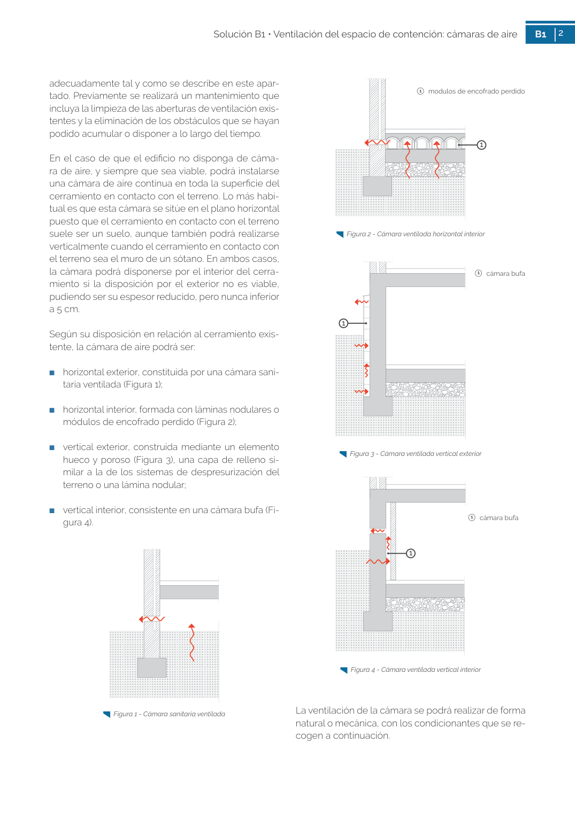

GUIA · 1 modulos de encofrado perdido · versión sin-fecha · capa guia
Formatos: JSON compacto · Markdown · PDF fuente
Ámbito del documento · texto del ámbito · documento y tablas
Tipo: tablas, figuras · nivel 1 · sección estimada: 1 modulos de encofrado perdido · padre:
1 modulos de encofrado perdido Figura 2 - Cámara ventilada horizontal interior 1 Figura 3 - Cámara ventilada vertical exterior

PDF fuente redistribuible: copia fiel enlazada en esta página (SHA256 verificado).